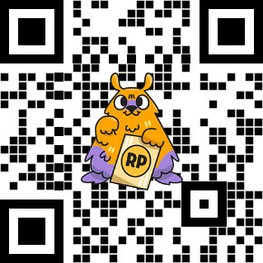

Donasi & Request
Dukung operasional swrdfgd dan request pembahasan spesifik.
Pembahasan soal di halaman utama ditambahkan secara acak. Kalau kamu butuh pembahasan untuk soal tertentu, kamu bisa berdonasi sekaligus menuliskan request di kolom "Pesan" pada Saweria.
- Soal ONMIPA: Cantumkan Tahun, Tingkat (Wil/Nas), dan Nomor Soal.
- Luar ONMIPA: Tuliskan detail soal atau sertakan link soalnya.
* Catatan: Kalau pesan request soal tidak spesifik atau dibiarkan kosong, pembahasan soal akan dipilih secara acak.
Scan QR Code

'">
atau
Donasi & Request via Link Saweria